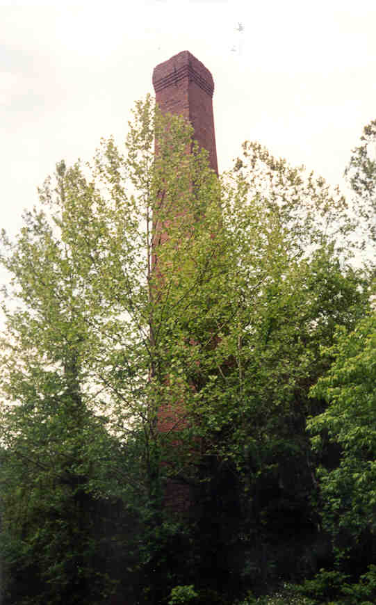
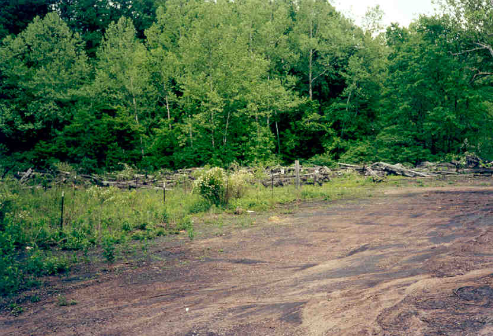
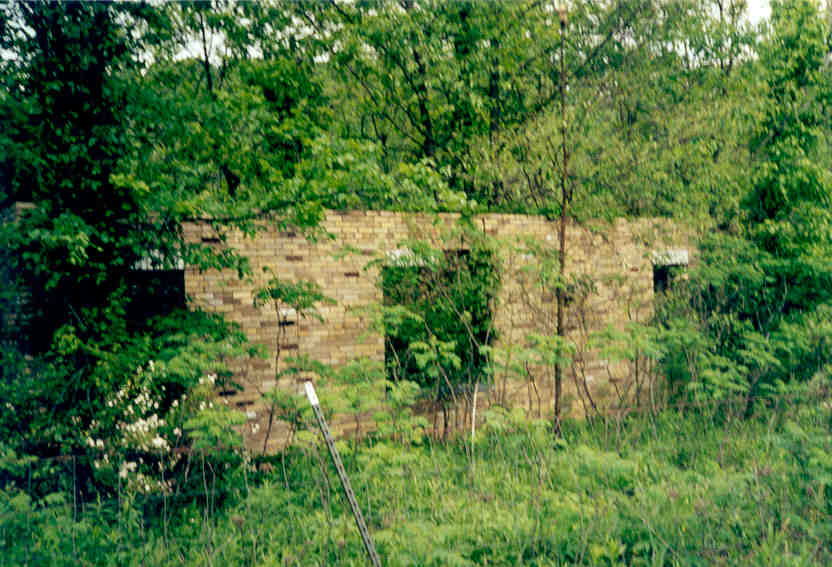
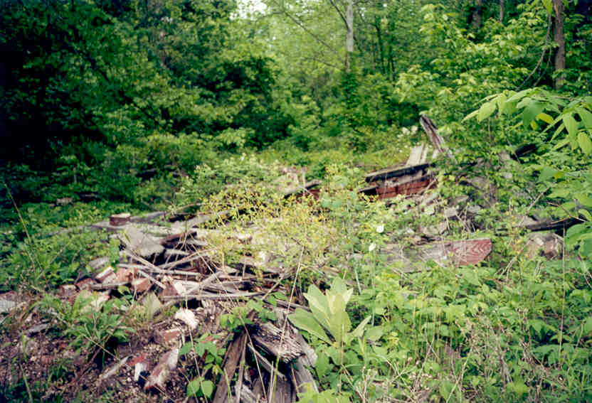
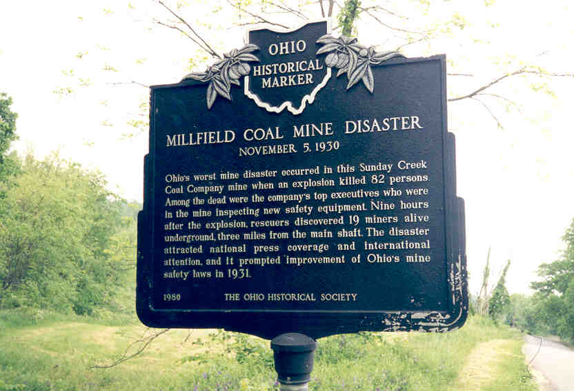

Millfield Mine Explosion Site

On a rural road in Millfield stand the ruins of the worst mine disaster in the history of the state of Ohio. The Sunday Creek Coal Company, which also ran the mines at San Toy, operated mines all over the Hocking Hills region. The Millfield site, in Athens County, was the hub of hundreds of shafts.
On November 5, 1930, gases in the mine were ignited by a spark between a trolley car and its railing. The ensuing explosion killed eighty-two people, including the company's top executives, who were there to inspect the new safety equipment. Nine hours later, nineteen miners were discovered alive three miles from the main shaft. The disaster had the effect of pressuring Ohio's lawmakers to improve mine safety regulations in 1931.

As a monument to those killed, the site was left as-is, and a historical marker was erected there. It consists of a clearing, two hollowed-out buildings without roofs, and the towering smokestack. Also nearby are wooden planks and other rubble left over from the blast.


I had the opportunity to visit the mine explosion site with Troy and Jennifer, who e-mailed me about it and were nice enough to take me out there. When we went it was tick season, and we found several after our visit, which gave me nightmares for weeks.
I've never heard that the place is haunted, but it seems a likely candidate. I'd like to return late one night for another visit. Either way, it's a fascinating place to see, and an important part of our state's history, hidden in the backwoods of Athens County.
Click Here to view an article about the last surviving miner from the disaster.

Back
{kind=link}
{kind=link}
{kind=link}
{kind=link}
{kind=link}